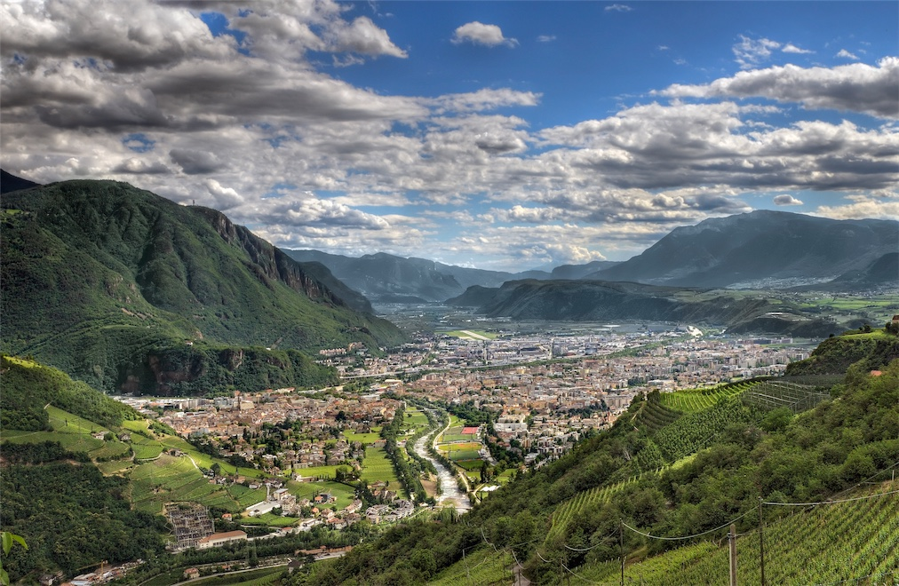

Venue
The summer school will be held at the Free University of Bozen-Bolzano, in Bolzano/Bozen, Italy. The university is at less than 10 minutes by walking from the Train Station.
Bolzano-Bozen
Bolzano/Bozen is the capital city of the province of South Tyrol, in northern Italy .
It is a particular place of Italy because it is one of five mainly Italian-speaking
municipalities in the mostly Germanic province of South Tyrol. Since 2010, the city
is ranked in the top 2 among 107 Italian cities in the quality-of-life survey by the
Italian newspaper Il Sole 24 Ore. Read more (Wikipedia).

It hosts several interesting sightseeings such as the the South Tyrol Museum of Archaeology, which has the mummy of Ötzi the Iceman, and the Laubengasse (Via dei Portici), a street in the city centre with medieval carcades along its entire course, now housing high-street shops
There are several promenades of different levels of difficulty also starting from town. Please see Sentres.

The city’s Tourist board office website provides several information about Bolzano/Bozen. Please contact them at info@bolzano-bozen.it for information regarding venues, sightseeings, trips, food, etc.
The current weather forecast is available here.
Accommodations
Stadthotel – Hotel Città
Waltherplatz 21 piazza Walther I-39100 Bozen-Bolzano
Phone: +39 0471 975221
Fax: +39 0471 976688
E-mail: info@hotelcitta.info
Hotel Scala Stiegl
Brennerstraße 11 via Brennero I-39100 Bozen-Bolzano
Phone: +39 0471 976222
Fax: +39 0471 981141
E-mail: info@scalahot.com
Parkhotel Luna Mondschein
Piavestraße 15 via Piave I-39100 Bozen-Bolzano
Phone: +39 0471 975642
Fax: +39 0471 975577
E-mail: info@hotel-luna.it
Hotel Feichter
Weintraubengasse 15 via Grappoli I-39100 Bozen-Bolzano
Phone: +39 0471 978768
Fax: +39 0471 974803
E-mail: info@hotelfeichter.it
Kolping House Bolzano
Adolph-Kolping Straße 3 I-39100 Bozen-Bolzano Italia
Phone: +39 0471 308400
Fax: +39 0471 973917
E-mail: info@kolpingbozen.it
|